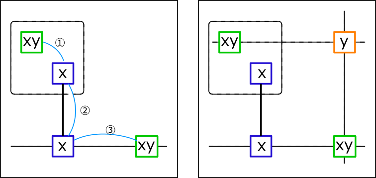

W-Wing
W-Wing is an analysis algorithm composed of bivalue cell and link.
Assume that a pair of bivalue cells(green frames) with the same candidate numbers(x,y)
are associated with ①weak link ②strong link ③weak link of number x(Left figure).
It is explained in the following figure.
Let's assume that a pair of bivalue cells (green frames) with the same candidate numbers (x, y) are associated
with ① weak link ② strong link ③ weak link of number x. (Left figure).
At this time, the cell(orange frame) related to the two bivalue cells(green frame)
can not have the candidate number y(right picture).

The analysis algorithm is as follows.
- Create a list of bivalue cells
- Choose 2 cells(P,Q) by combination from the list of bivalue cells.
(Check that P and Q have the same candidate number and belong to different House) - Choose one strong link L.
(Both end cells of L form a weak link with P, Q. - Check whether there are exclusion candidates in the common part of P influence zone and Q influence zone.
Here is an sample of W-Wing. In the scene on the right, there are 9 W-Wings in all, including this solution.


..973..81.8...9...7.5.84..33....82.74.2.......786..4.5...8.6..26........8.74.15.6
.4......512..7..8667..9.32......7..2..28.37..4..2......93.8..5771..5..638......9.